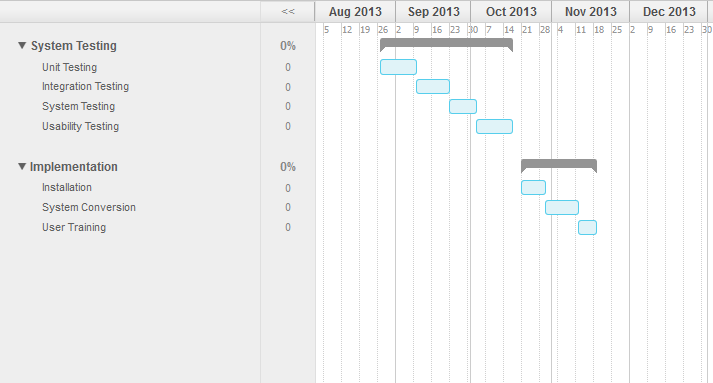
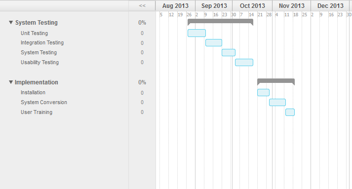
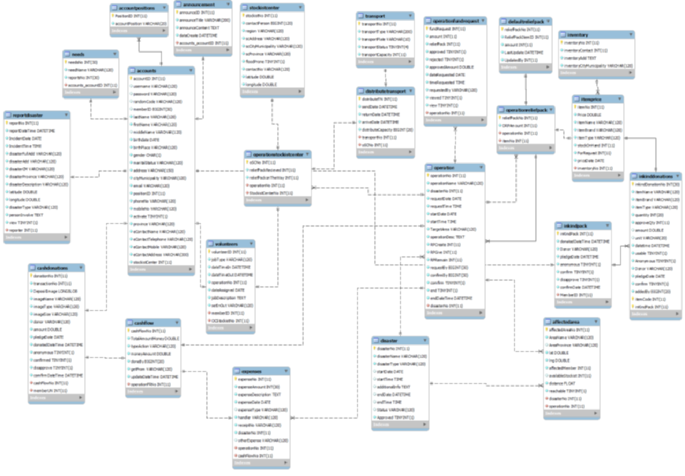
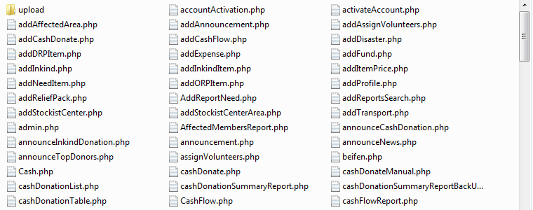

helps communities maximize all their resources efficiently and help out more affected areas and victims."
-
Stage 1:
ProposalIntroduction
During typhoons and calamities, proper relief good allocation has always been an issue. People in the affected areas are eager to get help in order for them to survive and the foundations and organization are abrupt to answer to these needs given that their resources are handled well. OG Cares Foundation is one of these organizations who try to answer to the needs of the victims as soon as they can. However, the organization is unable to fully maximize their services for the relief operations due to poor donor and inventory management, and not being able to identify exactly the list of members and areas affected by disasters.
This Study is focused on how an information system (IS) can help address these issues and in turn enable the organization to perform their operations efficiently. The proposed IS solution is a community-based disaster relief management system (CBDRMS). A community-based approach is deemed more effective in the current situation as government help commonly fails to reach local sectors. A CBDRMS will help communities maximize all their resources efficiently and help out more affected areas and victims. Disaster relief is performed in order to alleviate a disaster’s impact and hopefully reduce its potential for long-term casualties. Because of this, fast and immediate response is highly reliant on efficient operations which could be aided by a properly developed CBDRMS. -
Methodology: Customized Agile & Spiral Model
1. Collection and analysis of information
2. Conceptualization of proposed system
3. Prototyping
4. Development of the system
5. System Testing
6. Implementation -
Project Gantt Chart
 

-
Stage 2:
System
PrototypeBusiness Rules
One of the most important things to identify in interviews, for setting the auto calculation intelligence of the system.
1. Stockist Center Selection and Relief Pack Claiming
2. Reachability Matrix from Incident reports
3. Arrangement of areas to prioritize (Response Plan-Start Operation)
4. Resource Allocations Priority Rules
5. Stockist Centers Arrangement
6. Trasportation Selection Rule
7. Unable to deliver goods -
Database Design

-
System Modules
1. Member Status Management Module
2. Planning Module
3. Donor Management Module
4. Inventory Module
5. Resource Allocation Module
6. Reports Generation Module -
System Design and Coding
1. Data Specification & Screen & Report Layout
2. Programming Languange: PHP
3. Database: MySQL Server
4. Programming Tools: Notepad++ & Bootsrap
5. Programming Standard: Naming Conventions -
Programming Standards
The team used the usual guidelines in the naming convention. For naming methods, the team used Camel Case in verb-object format (e.g. activateAccount). Variable names used in the program shall also be in Camel Case. Similarly, source files were named using the same method. The names of the source files will match the class name and the file name.
Furthermore, the team also created naming conventions for some of the information that will be used in the processes of the system. They are as follows:
1. Disaster Name: Disaster type + disaster date
2. Operation Name: Disaster name – (number of times of selecting the same targetarea) + : + Target area
3. Cash Transaction No: Transaction date + “C” + (total number of transactions + 1)
4. In-Kind Transaction No: Transaction date + “D” + (total number of transactions + 1)
5. Target Stockist Center: “Stockist No:” + Stockist Number + “-“ + Stockist address -
Motivation For Developer
"Aimee kaya mo to ayusin tiwala lang yan.txt"
-
Stage 3:
Final
SystemDeveloped System

-
System Testing
Complete system testing is divided into four different stages - module testing, integration testing, system testing, and user acceptance test. The module testing stage shall cover the testing of each individual component of each module. It is ideal that each module functions properly before integration. Once the modules have been integrated, another testing shall be done – integration testing. This done ensure that the functionality of the modules were not affected by the integration performed. The modules should still be working properly. After the integration testing a system testing is then performed where all components of the system, unit, and modules are combined and tested as a whole. Finally, a user acceptance test is performed. This test involves the participation of the actual users of the system. They shall test the system’s usability and functionality. Their evaluation is also critical for the team.
-
Implementation Plan
1. Training: Training sessions may be divided into different modules depending on the need of the users. Additional sessions may also be requested as deemed needed. Training shall be done in the actual workplace of the users and a mock scenario shall be created for them to simulate.
2. System Conversion: For the system conversion, a Direct Cutover method framework should be followed since technically, there is no actual information system currently in place.
3. Data Conversion: For the system to be fully functional, all they have to input is their member database. This may be done by manually inputting into the system all their member information. All other data needed shall be built up whenever they use the system.